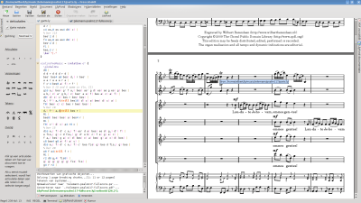
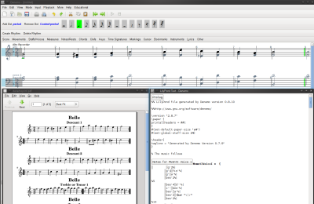
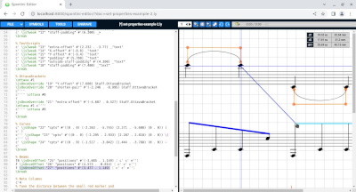

Daha Kolay Düzenleme
Ön-Yüz Uygulamaları
Frescobaldi


(büyütmek için tıklayın)
Frescobaldi, bilhassa LilyPond için eklenmiş ve geliştirilmiş birçok özelliğe sahip hafif ancak güçlü bir müzik ve metin düzenleyicisidir. Başlıca özellikler, kod ve müzik görünümleri arasında tıklama ile bağlantılar, detaylı eser sihirbazları, hazır LilyPond belgelendirme tarayıcısı, sözdizimi vurgulama ve otomatik tamamlama içerir. Frescobaldi, Python ile yazılmış olup kullanıcı arayüzü için PyQt4 kullanmaktadır ve tüm önemli işletim sistemlerinde (GNU/Linux, macOS ve Windows) çalışır.
Denemo


(büyütmek için tıklayın)
Denemo, LilyPond kaynak kodu üreten ve aynı zamanda sesli oynatma imkanı sunan bir grafik düzenleyicidir. Kullanıcılara LilyPond kaynak kodunu grafik görünümle paralel olarak görüntüleme olanağı tanır. Ekstra LilyPond düzenlemeleri, notalar, akorlar vb. ile ilişkilendirilebilir ve Denemo dosyası ile birlikte saklanır, böylece kullanıcılar grafiksel olarak düzenlemeye devam edebilir.
LilyPond metinindeki imleci hareket ettirmek, grafik görünümdeki imleci hareket ettirir ve LilyPond düzenlemelerinizdeki herhangi bir sözdizimi hatası, oradan yazdırıldığında, metin görünümünde vurgulanır.
Spontini-Editor


(büyütmek için tıklayın)
https://github.com/paopre/Spontini
Spontini-Editor, iki temel özellik ile, LilyPond ile düzenlenmiş eserlerin oluşturulmasını ve detaylı grafik ayarlarını hızlandıran karma metin ve grafik müzik düzenleyicisidir:
- Müzik nesnelerinin (artikülasyon, metinler, pedallar, eğriler, parantezler vb.) fare ile konumlandırılmasına izin verir. Konumlandırma grafik olarak tamamlandığında, metin düzenleyici, ilgili değişiklikleri girdi dosyasında rapor eder.
- Tablo ve biçimli formatta notalar ekleyerek piyano müziği oluşturulmasına yardımcı olur ve cross-staff notalar için hızlı araçlar sağlar.
Hem bağımsız bir uygulama olarak hem de web tabanlı bir sunucu + çoklu istemci sistemi olarak çalışır.
Tarayıcı tabanlı editörler
Hacklily
LilyPond tarafından desteklenen, otomatik tamamlama ve bağlamsal yardım gibi ek özelliklere sahip, çevrimiçi bir nota düzenleyici ve yayınlama aracıdır. Temel web barındaırma kodu, kendi geliştirme sayfası üzerinde AGPL lisansı altında bulunmaktadır.
www.omet.ca
2010’dan beri, Online Music Editing Tools (OMET), özel olarak tasarlanmış bir web arayüzü ile kullanıma hazır bir LilyPond hizmeti sunmaktadır. Kayıt gereklidir ancak ücretsizdir.
Kelime İşlemci Eklentileri
OOoLilyPond
https://extensions.services.openoffice.org/en/project/OOoLilyPond
LilyPond dosyalarını OpenOffice.org belgeleri içinde resimlere dönüştüren bir OpenOffice.org uzantısı.
IDE Plug-ins
Elysium
https://github.com/thSoft/elysium
LilyPond notalarını Eclipse ile düzenlemek için bütün bir ortam, LilyPond’u kolayca yönetebilmek için zengin bir araç seti sunan bir yazılım.
Metin editörleri
Emacs
https://www.gnu.org/software/emacs/ Emacs, birçok farklı bilgisayar diline yönelik dil duyarlı bir metin düzenleyicisidir. Emacs, son derece genişletilebilir bir düzenleyicidir ve Tümleşik Geliştirme Ortamı olarak kullanılabilir. LilyPond kaynak dosyalarıyla çalışmak için dil tanımlamalarını sağlayan bir ‘lilypond modu’ bulunmaktadır. Bir geliştirici, Emacs için bir ana mod olan lyqi’i yazmıştır.
Eğer Emacs’a alışkın değilseniz, muhtemelen LilyPond girdi dosyalarını yazmak için farklı bir düzenleyici kullanmayı tercih edebililrsiniz.
Emacs kurulumu hakkında daha fazla bilgiye, Metin düzenleyici desteği bölümünde ulaşabilirsiniz.
Vim
https://www.vim.org
Vim, minimal bir metin düzenleyicisidir ve eski Unix vi düzenleyicisinin
bir uzantısıdır. Aynı zamanda genişletilebilir ve yapılandırılabilirdir.
Eğer Vi’ye alışkın değilseniz, muhtemelen LilyPond giriş dosyalarını yazmak için farklı bir düzenleyici kullanmayı tercih edebilirsiniz.
Vim kurulumu hakkında daha fazla bilgiye, Metin düzenleyici desteği bölümünde ulaşabilirsiniz.
TeXShop
https://pages.uoregon.edu/koch/texshop/
macOS için TeXShop düzenleyicisi LiyPond’u çalıştırmak için genişletilebilir,
düzenleyici içindeki lilypond-book ve convert-ly, bu
eklentileri kullanmak için:
LilyPond kodunu dışarı aktarabilen diğer programlar
Partisyon, tab ve MIDI düzenleyicileri:
- bwwtolily, bir
.bwwveya.bmwdosyasını LilyPond’a dönüştürmeye çalışır. Tüm süslemelerin doğru bir şekilde dönüştürülemeyebileceği unutulmamalıdır (bu özellikle piobaireachd için geçerlidir), ancak program bunları listeleyecektir. - Canorus, bir partisyon düzenleyicisidir ve LilyPond için dışa aktarabilir, ancak hala beta yazılım aşamasındadır. Buna rağmen, testçilere açıktır.
- Enc2ly, Encore müzik partisyonunu LilyPond formatına dönüştüren bir GNU/Linux programıdır.
- go-enc2ly, Encore dosyalarını LilyPond’a dönüştüren bir Go aracıdır. Felipe Castro’nun araştırmasını kullanarak oluşturulmuş ve 4.55 demo versiyonunu kulllanarak, tersine mühendislik ile varolan .enc dosyalarına ince ayarlar yaparak onları yüklemiştir.
- NtEd, Cairo kütüphanesine dayanan bir partisyon düzenleyicisidir ve LilyPond için dışa aktarma konusunda deneysel destek sunmaktadır.
- NW2LY, NoteWorthy bestecilerinin şarkılarını LilyPond’a dönüştüren bir C# programıdır.
- Ripple, farklı müzik çalışmalarını tek bir eser veya parçada birleştirmek için bir mod içeren eser ve parça oluşturmaya yardımcı olan bir programdır.
- Rosegarden, bir ses ve MIDI sekans düzenleyicisidir ve aynı zamanda tek porte düzenleme için bir partisyon düzenleyiciye sahiptir.
Algoritmik Kod Oluşturucular
- Abjad, bestecilere LilyPond notasyonunda karmaşık parçaları yinelemeli ve aşamalı bir şekilde oluşturmalarına yardımcı olmak amacıyla tasarlanmış Formalize Edilmiş Partisyon Kontrolü için bir Python API’dır.
- FOMUS, (FOrmat MUSic), bilgisayar müziği bestecileri için bir müzik notasyon aracıdır. Lisp programlama dilinde yazılmış olup çeşitli yorumlayıcılarda test edilmiştir. Ayrıca bir C++ girişi de mevcuttur.
- Strasheela, The Mozart Programming System üzerine inşa edilmiş bir ortamdır.
Aktif olarak geliştirilmeyen diğer programlar
- LilyBin, LilyPond’u yüklemeye gerek kalmadan çevrimiçi olarak partisyonlarınızı doğrudan biçimlendirebileceğiniz bir çevrimiçi LilyPond düzenleyicisidir. Kod parçacıkları, ‘pastebin’ sitelerinde olduğu gibi benzersiz bir URL ile saklanır. Önceden https://lilybin.com adresinde barındırılsa da, şu anda devam etmeyen bu hizmetin kaynak kodu hala MIT lisansı altında ücretsiz olarak kullanılabilir; GitHub sayfasında bulunabilir.
- WebLily, LilyPond temelli ilk web hizmetlerinden biriydi.
- LilyPondTool, jEdit metin düzenleyicisi için bir eklenti olarak oluşturulmuştur.
- Frescobaldi, LilyKDE’nin yerini almıştır ve yalnızca, KDE 3.5 için LilyKDE3 ve KDE 4.1 için lilypond-KDE4 olarak mevcuttur.
- LilyComp, sayı tablosu gibi davranan ve LilyPond notaları üreten bir grafik nota giriş programıdır.
- MuseScore, bir partisyon düzenleyicisidir. LilyPond dışa aktarma özelliği 2.0 sürümünde kaldırılmıştır, ancak önceki sürümleri hala Sourceforge üzerinden indirilebilir.
- MusicXML’i içe aktaran NoteEdit NtEd ve Canorus’a çatallanmıştır (fork).
- Rumor, gerçek zamanlı monofonik MIDI’den LilyPond’a dönüştürücüdür.
- tunefl, LilyPond’u yerel olarak yüklemeye gerek olmadan çevrimiçi olarak mini-partisyonlarınızı düzenlemenizi sağlar. Programın tüm özelliklerini kullanışlı bir web arayüzü sağlayarak deneyimleye olanak tanır.
- TuxGuitar, çoklu parça tablatura düzenleyici ve çalardır, bir partisyon görüntüleyici içerir ve LilyPond’a dışa aktarım yapabilir.
Şimdi ne yapmalısınız?
Şimdi LilyPond’u İndirmek için hazırsınız.
Hala ikna olmadınız mı? Birçok besteci, müzisyen ve orkestra şefi, müziği LilyPond’un girdi formatında yazmayı öğrendi. Deneyimli kullanıcılar, LilyPond ile tam bir partisyonu girmenin, bir piyano klavyesi veya fare+GUI ile yapmaktan daha hızlı olduğunu bildirdiler! Belki de LilyPond’un sağladığı Özellikler, Örnekler veya Özgürlük konularını gözden geçirmek ya da kullanıcıların Prodüksiyonlar veİncelemeler hakkında okumak istersiniz. Ayrıca, klasik notasyonun hesaplamalı estetiğine yaklaşımımız, Arka Plan bölümümüzde açıklanmıştır.
Hukuki Dil
Tüm logolar ve ürün görselleri telif hakkına ve ticari markaya tabidir.
Tux the Linux Penguin was created by lewing@isc.tamu.edu with the Gnu Image Manipulation Program.
The FreeBSD logo is a registered trademark of The FreeBSD Foundation.
The “X image” is not a registered trademark. It was created by Nihonjoe and CyberSkull, and placed under the GNU Free Documentation License version 1.2 or later. We found the image on this Wikimedia Commons page.

The “four colored rectangles image” is not a registered trademark. It was created by Rohitbd and placed under the GNU Free Documentation License version 1.2. We found the image on this Wikimedia Commons page.